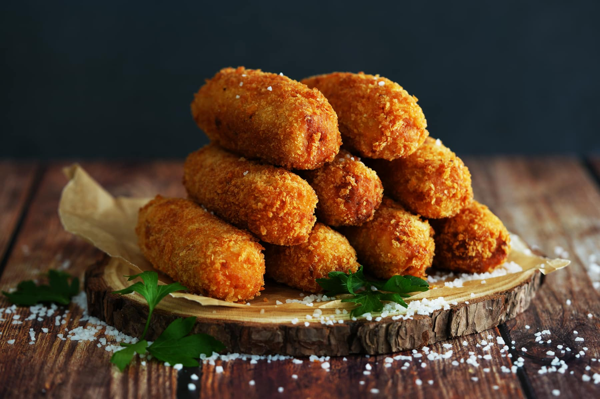
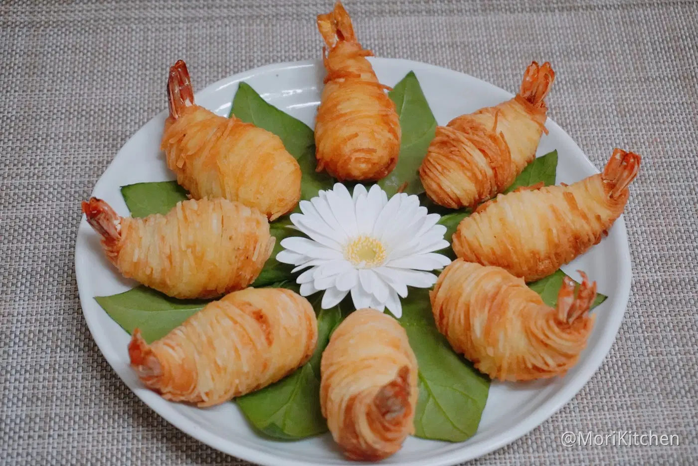
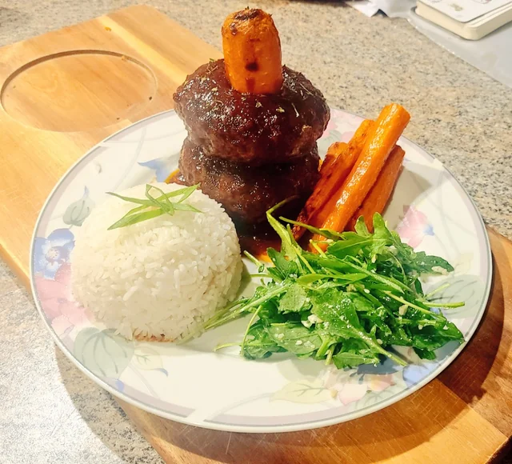

Cabbage leaves wrapped around a filling of ground pork, lotus root, and chilli, tied up with green
onion and simmered in a meaty and spicy chicken broth.

Chicken Croquettes (Umamusume: Pretty Derby)
Deep-fried ground chicken mixed with béchamel sauce shaped into cylinders coated in flour, eggs, and
breadcrumbs.

Golden Shrimp Balls (Genshin Impact)
Shrimp wrapped in thin potato strips, deep-fried to golden perfection.

Carrot Hamburg Steak (Umamusume: Pretty Derby)
Japanese-style ground meat patties incorporated with carrots, with a ketchup-based sauce poured on
top. Served either with rice or spaghetti.